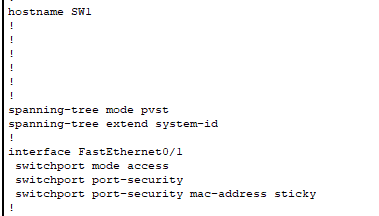
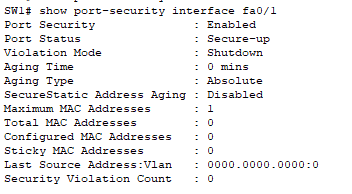

L'objectif de cette intervention est de sécuriser la couche d'accès (Couche 2 OSI) de l'infrastructure réseau. Afin de prévenir le branchement d'équipements non autorisés ou les attaques de type MAC Spoofing, un filtrage strict par adresse MAC a été mis en place sur les ports utilisateurs.
Configuration appliquée sur le commutateur d'accès SW1, port utilisateur Fa0/1. L'option sticky permet un apprentissage dynamique de l'adresse MAC légitime, évitant toute saisie manuelle.

Résultat de la commande show port-security interface fa0/1 après application de la configuration :

Un test d'intrusion physique a été simulé en remplaçant le poste légitime par un équipement non reconnu, afin de valider l'efficacité de la solution.
! -- Réactivation du port après incident -- SW1(config)# interface FastEthernet0/1 SW1(config-if)# shutdown SW1(config-if)# no shutdown